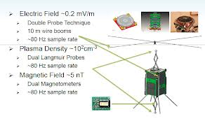
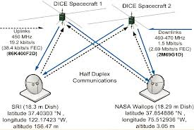
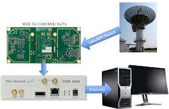
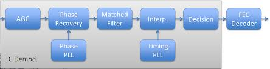
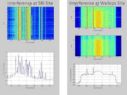
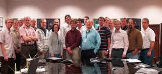

动态电离层的CubeSat实验 - 高速卫星地面站
原作者：Dr. Jacob Gunther
Ettus研究使用的产品：USRP N210，WBX
机构：美国犹他州立大学合作与Level 3通信
应用领域：卫星通信
挑战：
为实现地球科学任务的低成本，高性能的航天器通信系统。
解决方案：
球队需要一个负担得起的，可重新配置的通信解决方案来支持航天器的对地通信链路。 USRP的N210被用来实现地面部分和允许团队以适应不断变化的干扰条件。
介绍：
犹他州立大学是从美国国家科学基金会授予的赠款来设计，构建，测试和发射CubeSat卫星将绕地球在低地球轨道，并采取相关的太阳风暴测量。该卫星被称为动态电离层的CubeSat实验，或骰子。卫星使用一套仪器，包括一个电场，血浆和磁性探针。与这些仪器的测量结果的融合提供了独特见解的方式从太阳耀斑粒子地球上层大气相互作用。这些信息将帮助科学家更好地理解太阳耀斑如何影响地球的环境。
Cubesat方面大多采用每秒1200和19200位之间运行的低速率分组无线电。上，可以从空间飞行器被下行传输的科学数据量这个约束。骰子科研任务的硬性规定一个更高的数据速率来检索所有的完整分析所需的信息。骰子团队面临着设计的通信解决方案，以增加超过1 Mbps的数据吞吐量的挑战。这是比较用于CUBESAT任务大多数现有的通信系统一千倍的增加。
面临的挑战
开发这种高速通信系统并不是没有挑战一个长长的清单。从技术角度来看，很难以给定一个立方体卫星电源总线的功率限制这些更高的数据速率来关闭链路。标称操作需要在地面站高增益天线，并通过地面站的下行会议的精心策划。飞船电台也有可以和CubeSat的密闭空间内，并满足散热要求，确保可靠运行。
此外，也有由项目所带来的监管挑战。目前，还没有这样的DICE团队被要求在460和470 MHz的无线电干扰的高潜力之间的高流量的无线电波段辅助用户操作的小型科学卫星频谱保留。该二次分配授权在地球表面发射信号的低磁通密度，几乎低保任何地面干扰将具有显著更高的功率比。
最后，但并非最不重要的，很少有关的，现成的解决方案，可以作为地面站收发机部件，同时满足系统的功能性和灵活性的要求。许多这种系统向上$ 100,000的成本可能符合要求的解决方案，这是不能接受的旨在证明空间科学的程序可以在具有成本效益的方式进行。
最终系统
任何航天器通信系统，涉及到几个组件协调运行。骰子飞船使用的军校学生收音机Level 3通信（L-3）。这是一个经过全面测试的硬件，可以同时通过的CubeSat总线设定的限制内装修空间环境可靠运行。本机与偏移正交相传输的数据移键控（O-QPSK），以减少因发射放大器的非线性失真。过空中数据率为2.69 Mbps的，其中包括帧开销，前向纠错等最终用户数据率为1.5Mbps的。
在DICE任务的运行阶段，使用两个地面站。在NASA沃洛普斯领域的设施被作为主要的地面站。这包括一个18.29米菜。其他设施是位于斯坦福研究国际18.3米盘中加州门洛帕克，地面站使用的Ettus研究USRP™（通用软件无线电）来实现上行和下行收发器。 USRP的硬件被连接到PC也提供记录用于后处理的所有下行链路数据的装置。
 图2 - DICE通信系统
该USRP和卫星地面通信
塔USRP N210被选择，以满足为使命地面站的苛刻要求。接口到一个个人计算机，USRP的设备允许团队访问RF信号调制和解码的信号。在下行会议上，USRP，PC和存储设备是用来记录RF样本，这将是后处理使用的GNU Radio和C ++。接收机系统的框图在图4中看到。
图3 - DICE接收器子系统
期间沃洛普斯现场初始操作，DICE团队也遇到了与射频干扰（RFI）相关显著的挑战。工作频带暴露了无线电，以一按通（PTT）无线流量的显著量。由于这些会干扰与该遥远卫星的附近，信号对干扰（SIR）的比率非常低，导致下行链路性能较差。所接收到的频谱的效果被示为具有频谱和瀑布图。
图5 - 在干扰地面站
使用USRP软件实现定义允许团队应用自适应窄带陷波来降低这种干扰的影响。所得光谱施加干扰减轻后可以在下面的瀑布图中可以看出。因此，为了实现使用USRP N210软件定义无线电技术地面部队的决定使团队做得比存钱在预算紧张的多。
结论与未来发展
骰子团队能够派遣一个功能齐全的地面组件运行卫星，成功下行数据显著量，这样做建立的CubeSat任务一个新的性能标准。凭借灵活的USRP硬件的帮助下，该小组能够部署一个经济实惠的地面站组成。基于USRP系统的可重构性允许的团队在任务运行阶段做出调整，适应一个具有挑战性的RF环境。如果没有USRP N210 SDR技术可能采取显著更多的努力和投资，以实现这一成功。
在未来，这个地面站的概念将被重新使用了一些立方体卫星通信队，包括RAX队在密歇根大学。该系统提供显著的优点，因为单个无线电可以用于实现多个通信标准，否定需要对每个团队开发其自己的无线电实现。
图7 - DICE的CubeSat开发团队